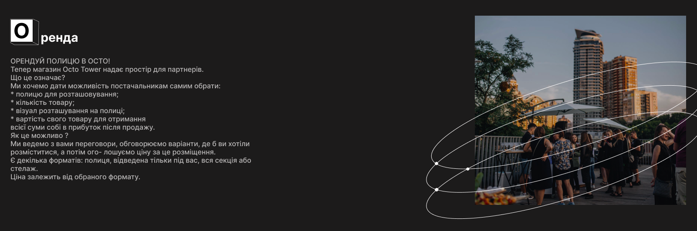

OCTO tower – це простір, який вміщає в себе брю бар, пекарню, коктейльний бар, магазин, коворкінг, школу
ХОРЕКА, великий лекторій та панорамний руфтоп. Над вхідними дверима до OCTO прикріпили напис «stedelijk
erfgoed», який із нідерландської перекладається як «міська спадщина».
Суттєва різниця Octo від інших кавових барів - відсутність автоматичного приготування кави та напоїв з молоком
(тільки альтернативні напої). Це означає, що кожен напій готується у той самий момент перед твоїми очами, а
також всі напої вимагають більшого часу приготування, ніж звичайно, бо це шоу. Але ми вирішили піти назустріч та
зробити це шоу доступним.
Крім того, ми надаємо наші приміщення, руфтоп та мостик в оренду для організації свят та івентів, а наші стіни
служать місцем для організації виставок художників та фотографів.
Octo Tower — це більше, ніж просто кав’ярня чи кафе.Цей простір об’єднує в себе стільки деталей та можливостей,
що може закривати всі існуючі потреби гостя.
